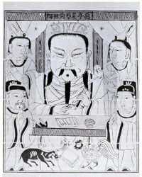

A papír feltalálása
Azt, hogy pontosan hol és mikor találták fel a papírt, a múlt ködébe vész, csak néhány nevet ismerünk a kezdeti időkből. Caj-Lun volt az, aki a hagyomány szerint közbenjárt Ho-ti császárnál annak érdekében, hogy a Kínai birodalomban
államilag is serkentsék a papírgyártást. Ez időszámításunk szerint 105-ben történt.

A papírmerítés
Régen papírmerítéssel gyártották a papírt a következő módon: egy üstbe növényi anyagokat tettek, és összefőzték némi selyemmel vagy kötéldarabokkal egészen addig, míg híg rostos pépet nem kaptak. Ezután a rostoldatot egy szitára öntötték,
a vizet lecsöpögtették, és az így kapott rostokat leválasztották a szitáról.
A papír feltalálása előtt
Mielőtt feltalálták a papírt, az emberek más anyagokra írták szövegeiket: kő- és agyagtáblára, viasztáblára, papiruszra vagy pergamenre. Bár ezekre is lehetett írni, vagy az előállításuk volt hosszadalmasabb, vagy kezelésük volt nehézkesebb,
tárolásuk pedig nagyobb helyet vagy gondosságot igényelt. A pergamen állatok bőréből készített, tartós, hártyaszerű anyag. A papír megjelenése előtt erre írtak Európában.
A papír diadalútja
Európába a mórok közvetítésével jutott el a papír, az első európai papírmalmokat pedig 1100 tájékán alapították, az Ibériai-félszigeten. Olaszországot egy-másfél évszázad késéssel hódította meg a papír, Luccában Genovában és Fabrianóban
működtek jelentős papírkészítő műhelyek. Hazánkban csak jóval ezután tudott a papírkészítői szakma meghonosodni: az első magyarországi papírmalmot az 1520-as években alapították, Lőcsén. A papírmalom a papírkészítő műhely elnevezése.
Valószínűleg a rongyzúzó berendezést hajtó vízikerék után kapta a papírkészítő műhely ezt az elnevezést. Folytatás: Gutenberg és a könyvnyomtatás